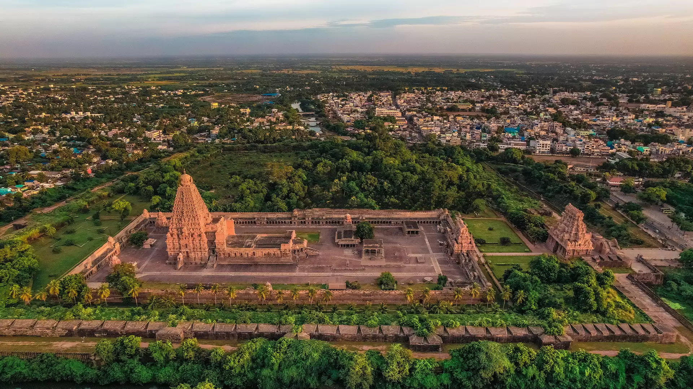

Here is where images from the past come together to paint the collage of a glorious city; a work of art in itself. that reflects the richness of culture and heritage that adorns this land. Thanjavur is a destination unlike any other.
The rice bowl of Tamil Nadu, Thanjavur is located in the delta of the Cauvery River and is one of the largest paddy cultivation areas in South India. River Cauvery is the main source of irrigation for cultivation in the district which lies on the southeastern side of the state.
The district was once the stronghold of the historic Cholas and at one time it was also the capital of the Cholas, Mutharayars and Marathas when they were at the peak of their power. Since then, Thanjavur has been the centre of the political, cultural and religious sphere of South India. The pursuits of these rulers are reflected in the great monuments like Grand Anaicut, Big Temple and Sarofoji Mahal, Palace and Saraswathi Mahal Library, etc. in the district.
The district is famous for its exquisite ancient handicrafts-making of bronze icons, art plates, bell-metal castings, bowls, napkin and powder boxes, and engraving work of motifs. The making of pith-work, ornamental fans, mats and musical instruments are also famous in the region. The district is a flourishing centre of handloom silk and cotton sarees.
Visiting Thanjavur is like visiting a museum. Every nook and corner breathes history and heritage. Culture is in the air in this town, which is also home to green pastures and lush paddy fields.
Saraswathi Mahal Library, Royal Museum, Thanjavur Palace, Rajaraja Chola Art Gallery, Sangeet Mahala, Brihadeeswara Temple and Fort are some of the sightseeing spots in the district.
Local buses, both Government and Private, ply to Thanjavur from major cities like Coimbatore, Chennai, Madurai, Tiruchirappalli, Thiruvarur and Pudukkottai on a regular basis.
Tiruchirappalli International Airport, about 61 km away.
Thanjavur Junction Station.
Tiruchirappalli Railway Station, about 55 km away.
By implementing these ecopractices, temples can become centers not only for spiritual reflection but also for promoting environmental consciousness and sustainable living.
Local and Organic Ingredients: Source ingredients locally to reduce transportation emissions and support local farmers. Prioritize organic produce to minimize the use of pesticides and chemicals.
Seasonal Menu: Design a menu that features ingredients that are in season. This not only supports local agriculture but also reduces the energy required for out-of-season produce.
Waste Reduction: Implement strategies to reduce food waste, such as offering smaller portion sizes, using creative ways to repurpose food scraps, and composting organic waste.
Composting and Recycling: Set up a comprehensive waste management system that includes composting of food scraps and proper recycling of materials like glass, paper, and plastics.
Reusable and Biodegradable Packaging: Use eco-friendly packaging materials, such as biodegradable containers and utensils made from materials like bamboo or cornstarch, to reduce single-use plastic waste.
Proper placement of dustbins is important to encourage people to use them effectively. They should be clearly visible, easily accessible, and strategically positioned in high-traffic areas. In addition to providing dustbins, it's essential to have a proper waste management system in place, including regular collection and disposal.
Encouraging people to use dustbins helps prevent littering, reduces the spread of diseases, and contributes to a cleaner and healthier environment. It's a collective responsibility to dispose of waste responsibly and contribute to the overall cleanliness and well-being of our surroundings.